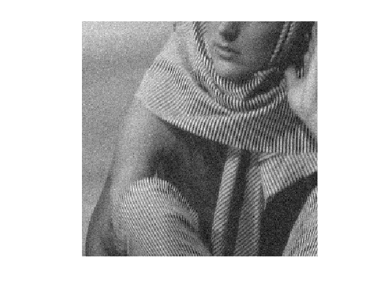
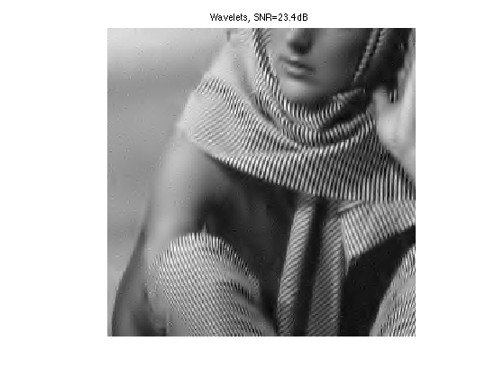

Dictionary Learning for Denoising
This tour follows the Dictionary Learning numerical tour. It uses a learned dictionary to perform image denoising.
Contents
Installing toolboxes and setting up the path.
You need to download the following files: signal toolbox and general toolbox.
You need to unzip these toolboxes in your working directory, so that you have toolbox_signal and toolbox_general in your directory.
For Scilab user: you must replace the Matlab comment '%' by its Scilab counterpart '//'.
Recommandation: You should create a text file named for instance numericaltour.sce (in Scilab) or numericaltour.m (in Matlab) to write all the Scilab/Matlab command you want to execute. Then, simply run exec('numericaltour.sce'); (in Scilab) or numericaltour; (in Matlab) to run the commands.
Execute this line only if you are using Matlab.
getd = @(p)path(p,path); % scilab users must *not* execute this
Then you can add the toolboxes to the path.
getd('toolbox_signal/'); getd('toolbox_general/');
Learning the Dictionary
We aim at applying the dictionary learning method to denoising. We thus consider a noisy image obtained by adding Gaussian noise to a clean, unknown image \(f_0 \in \RR^N\) where \(N=n_0 \times n_0\).
Noise level \(\sigma\).
sigma = .06;
Size of the image.
n0 = 256;
Load the image.
name = 'barb';
f0 = rescale( crop(load_image(name),n0) );
Display \(f_0\).
clf; imageplot(f0);
Noisy observations \(f=f_0+w\) where \(w\) is a realization of \(\Nn(0,\si^2\text{Id}_N)\).
f = f0 + sigma*randn(n0);
Display \(f\).
clf; imageplot(f);
Perform the numerical tour on Dictionary Learning to obtain a dictionary \(D \in \RR^{n \times p}\)
if not(exist('D')) sparsity_4_dictionary_learning; end
Width \(w\) of the patches.
w = sqrt(size(D,1));
Number \(p\) of atoms.
p = size(D,2);
Dimension \(n= w \times w\) of the data to be sparse coded.
n = w*w;
Denoising by Sparse Coding
Here we apply sparse coding in the learned dictionary to the problem of image denoising, as detailed in:
M. Elad and M. Aharon, Image Denoising Via Sparse and Redundant representations over Learned Dictionaries, IEEE Trans. on Image Processing, Vol. 15, no. 12, pp. 3736-3745, December 2006.
The method first extract lots of patches from \(f\), then perform sparse coding of each patch in \(D\), and then average the overlapping patch to obtained the denoised image \(f_1\).
We extract a large number \(m\) of patches \(Y = (y_j)_{j=1}^m \in \RR^{n \times m}\) from the noisy image \(f\).
To extract the patche, we use \[ y_j(t) = f( a_j + t ) \] where \(a_j\) is the location of patch indexed by \(j\).
In practice, splitting \(j=(j_1,j_2)\) as a 2-D index, we use \(a_j = (j_1 q,j_2 q) \) where \(q>0\) is an overlap factor ( so that setting \(q=w\) implies no overlap). Overlap is important to obtain good denoising performance (reduced blocking artifact).
q = 2;
Define regularly space positions for the extraction of patches.
[y,x] = meshgrid(1:q:n0-w/2, 1:q:n0-w/2); m = size(x(:),1); Xp = repmat(dX,[1 1 m]) + repmat( reshape(x(:),[1 1 m]), [w w 1]); Yp = repmat(dY,[1 1 m]) + repmat( reshape(y(:),[1 1 m]), [w w 1]);
Ensure boundary conditions (reflexion).
Xp(Xp>n0) = 2*n0-Xp(Xp>n0); Yp(Yp>n0) = 2*n0-Yp(Yp>n0);
Extract the \(m\) patches \(Y\).
Y = f(Xp+(Yp-1)*n0); Y = reshape(Y, [n, m]);
Save the mean \(\theta_j\) of each patch appart, and remove it.
theta = mean(Y); Y = Y - repmat( theta, [n 1] );
Denoising of the patches is obtained by performing a sparse coding of each patch \(y_j\) in \(D\) \[ \umin{\norm{D x_j - y_j} \leq \epsilon} \norm{x_j}_1. \]
The value of \(\epsilon>0\) is set proportionaly to the noise level \(\sqrt{n}\sigma\) that contaminates each patch. We denote \(\rho \approx 1\) the proportionality factor, that is a parameter of the method.
rho = .95; epsilon = rho*sqrt(n)*sigma;
The sparse coding problem can written equivalently in a way that is easier to deal using proximal splitting schemes. We introduce an auxiliary variable \(u=D x \in \RR^n\) as follow \[ \umin{ z=(x,u) \in \RR^p \times \RR^n } F(z) + G(z) \] where for \(z=(x,u)\), one defines \[ F(x,u) = \norm{x}_1 + \iota_{B_\epsilon(y)}(u) \qwhereq B_\epsilon(y) = \enscond{u}{ \norm{u-y} \leq \epsilon } \] and \[ G(x,u) = \iota_{\Cc}(x,u) \qwhereq \Cc = \enscond{(x,u)}{ u=D x }. \]
Here we included the constraints using characteristic functions \[ \iota_{A}(z) = \choice{ 0 \qifq z \in A, \\ +\infty \quad \text{otherwise}. } \]
Douglas-Rachford Algorithm
To minimize the sparse coding problem, we make use of a proximal splitting scheme to minimize an energy of the form \(F(z)+G(z)\). These schemes are adapted to solve structured non-smooth optimization problem.
They basically replace the traditional gradient-descent step (that is not available because neither \(F\) nor \(G\) are smooth functionals) by proximal mappings, defined as \[ \text{Prox}_{\gamma F}(z) = \uargmin{y} \frac{1}{2}\norm{z-y}^2 + \ga F(y) \] (the same definition applies also for \(G\)).
The Douglas-Rachford (DR) algorithm is an iterative scheme to minimize functionals of the form \[ \umin{z} F(z) + G(z) \] where \(F\) and \(G\) are convex functions for which one is able to comptue the proximal mappings \( \text{Prox}_{\gamma F} \) and \( \text{Prox}_{\gamma G} \).
The important point is that \(F\) and \(G\) do not need to be smooth. One onely needs then to be "proximable".
A DR iteration reads \[ \tilde z_{k+1} = \pa{1-\frac{\mu}{2}} \tilde z_k + \frac{\mu}{2} \text{rPox}_{\gamma G}( \text{rProx}_{\gamma F}(\tilde z_k) ) \qandq z_{k+1} = \text{Prox}_{\gamma F}(\tilde z_{k+1},) \]
We have use the following shortcuts: \[ \text{rProx}_{\gamma F}(z) = 2\text{Prox}_{\gamma F}(z)-z \]
It is of course possible to inter-change the roles of \(F\) and \(G\), which defines another set of iterations.
One can show that for any value of \(\gamma>0\), any \( 0 < \mu < 2 \), and any \(\tilde z_0\), \(z_k \rightarrow z^\star\) which is a minimizer of \(F+G\).
Please note that it is actually \(z_k\) that converges, and not \(\tilde z_k\).
To learn more about this algorithm, you can read:
Proximal Splitting Methods in Signal Processing, Patrick L. Combettes and Jean-Christophe Pesquet, in: Fixed-Point Algorithms for Inverse Problems in Science and Engineering, New York: Springer-Verlag, 2010.
Douglas-Rachford for Sparse Coding
In the special case of the constrained sparse coding problem, the proximal mapping of \(G\) is the orthogonal projection on the convex set \(\Cc\): \[ (\tilde x, \tilde u) = \text{Prox}_{\ga G}(x,u) = \text{Proj}_\Cc(x,u). \]
It can be computed by solving a linear system of equations since \[ \tilde u = D \tilde x \qwhereq \tilde x = (\text{Id} + D^* D)^{-1}(f + D^* u). \]
Define Proj\(_\Cc\), by pre-compuring the inverse of \(\text{Id} + D^* D\).
U = (eye(p) + D'*D)^(-1); Replicate = @(z)deal(z, D*z); ProjC = @(x,u)Replicate( U*( x + D'*u ) );
One has \(\text{Prox}_{\ga G} = \text{Proj}_{\Cc}\), whatever the value of \(\ga\).
ProxG = @(f,u,gamma)ProjC(f,u);
Function \(F(x,u)\) is actully a separable sum of a function that only depends on \(x\) and a function that depends only on \(u\): \[ F(x,u) = \iota_{B_\epsilon(y)}(u) + \norm{x}_1. \] The proximal operator of \(F\) reads \[ \text{Prox}_{\ga F}(x,u) = ( \text{Proj}_{B_\epsilon(y)}(u), \text{Prox}_{\ga \norm{\cdot}_1 }(x) ). \]
In order to speed up the implementation, the DR algorithm will be performed in parallel on all the \(x_j\). We thus define \(y=Y\) to be the set of all the patches.
y = Y(:,1:m);
Define the projector \[ \text{Proj}_{B_\epsilon(y)}(u) = y + (u-y) \max\pa{1 , \frac{\epsilon}{\norm{u-y}} } \]
amplitude = @(a)repmat( sqrt(sum(a.^2,1)), [n 1] ); ProjB = @(u)y + (u-y) .* min(1, epsilon./amplitude(u-y) );
The proximal operator of the \( \ell^1 \) norm \(\norm{\cdot}_1\) is a soft thresholding: \[ \text{Prox}_{\ga \norm{\cdot}_1}(x)_i = \max\pa{ 0, \frac{\ga}{\abs{x_i}} } x_i. \]
ProxL1 = @(x,gamma)max(0,1-gamma./max(1e-9, abs(x))) .* x;
Define the proximal operator of \(F\).
ProxF = @(x,u,gamma)deal( ProxL1(x,gamma), ProjB(u) );
Set the value of \(\mu\) and \(\gamma\). You might consider using your own value to speed up the convergence.
mu = 1; gamma = 1;
Number of iterations.
niter = 800;
Exercice 1: (check the solution) Implement the DR iterative algorithm on niter iterations. Keep track of the evolution of the minimized energy \( \norm{x}_1 \) during the iterations.
exo1;

Patch Averaging
Once each \(x_j\) is computed, one obtains the denoised patch \(\tilde y_j = D x_j\). These denoised patches are then aggregated together to obtained the denoised image: \[ f_1(t) = \frac{1}{W_t} \sum_j \tilde y_j(t-a_j) \] where \(W_t\) is the number of patches that overlap at a given pixel location \(t\) (note that in this formula, we assumed \(\tilde y_j(t-a_j)=0\) when \(t-a_j\) falls outside the patch limits).
Approximated patches \( Y_1 = (\tilde y_j)_j = D X\).
Y1 = reshape(D*x, [w w m]);
Insert back the mean.
Y1 = Y1 - repmat( mean(mean(Y1)), [w w] ); Y1 = Y1 + reshape(repmat( theta, [n 1] ), [w w m]);
To obtain the denoising, we average the value of the approximated patches \( Y_1 \) that overlap.
W = zeros(n0,n0); f1 = zeros(n0,n0); for i=1:m x = Xp(:,:,i); y = Yp(:,:,i); f1(x+(y-1)*n0) = f1(x+(y-1)*n0) + Y1(:,:,i); W(x+(y-1)*n0) = W(x+(y-1)*n0) + 1; end f1 = f1 ./ W;
Display the result.
clf; imageplot(clamp(f1), ['Denoised, SNR=' num2str(snr(f0,f1),4) 'dB']);
Exercice 2: (check the solution) Compare the obtained result with translation invariant wavelet hard thresholding.
exo2;
Exercice 3: (check the solution) Study the influence of the parameter \(\rho\) on the quality of the denoising. Study the influence of the number \(p\) of atoms.
exo3;